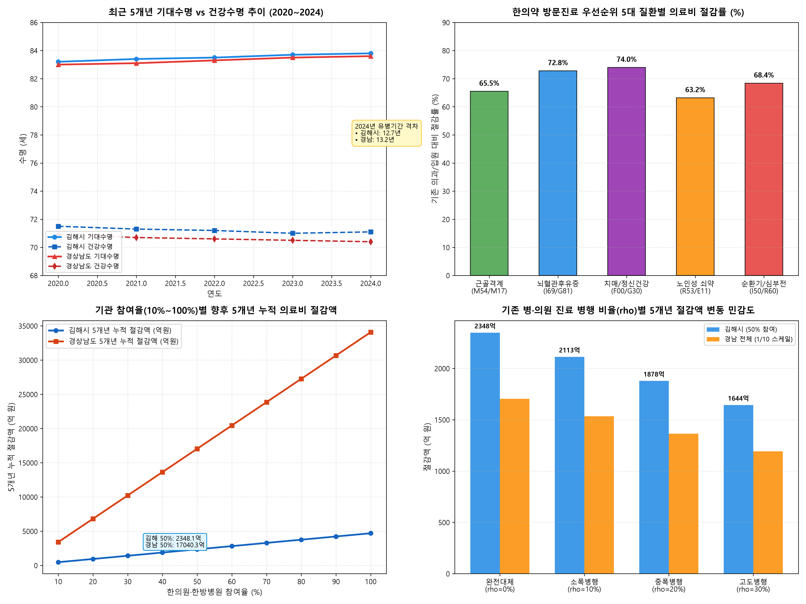

KOSIS 국가통계포털 및 건강보험심사평가원(HIRA) 보건의료 빅데이터 기반 | 기존 병·의원/요양병원 진료 병행(Concurrent Utilization) 차단 조건 및 5개년 의료비 절감 시뮬레이션
Python 데이터 시뮬레이션 엔진(simulate_gimhae_gyeongnam_km_full.py)을 통해 연산된 수명 격차, 질환별 절감률, 10단계 참여율 및 병행 진료 비율(rho) 민감도 분석 차트입니다.

동일 주상병(KCD 3단위)으로 동일 기간 한의 방문진료와 의과 외래 물리치료/입원 청구가 동시 전송될 경우 자동 삭감 및 보류 처리하는 Filter 탑재.
방문진료 대상 환자는 1개 한의원을 전담 기관으로 지정. 의과 방문 필요 시 한의 주치의의 '진료 의뢰서(Referral)' 등록 필수화.
요양병원 입원 환자가 퇴원 후 자택 복귀 시에만 방문진료 수가를 100% 인정한 '퇴원 연계 수가' 도입으로 입원-방문 중복 물리적 차단.
한의 방문진료 시 DUR 실시간 조회를 통해 의과 처방 약물(진통소염제, 향정약, 이뇨제 등)의 과다 중복 투약을 조절·감축하는 복약 관리 가이드라인 적용.
| 병행 진료 시나리오 | 병행 진료 비율 (ρ) | 김해시 5개년 누적 절감액 | 김해시 5년차 연 절감액 | 경상남도 5개년 누적 절감액 | 경상남도 5년차 연 절감액 | 절감액 보존율 |
|---|---|---|---|---|---|---|
| 완전 대체 (제도적 차단 100%) | ρ = 0% | 2,367.6 억 원 | 590.1 억 원 | 1조 7,858.9 억 원 | 4,451.1 억 원 | 100.0% (기준) |
| 소폭 병행 (일부 외래 병행) | ρ = 10% | 2,130.8 억 원 | 531.1 억 원 | 1조 6,073.0 억 원 | 4,006.0 억 원 | 90.0% (-10%) |
| 중폭 병행 (외래/투약 병행) | ρ = 20% | 1,894.1 억 원 | 472.1 억 원 | 1조 4,287.1 억 원 | 3,560.9 억 원 | 80.0% (-20%) |
| 고도 병행 (요양병원 입원 병행) | ρ = 30% | 1,657.3 억 원 | 413.1 억 원 | 1조 2,501.2 억 원 | 3,115.8 억 원 | 70.0% (-30%) |
| 질환군 (KCD 코드) | 노인 유병률 | 기존 의과/입원 연비용 | 한의 방문진료 연비용 | 1인당 연 절감액 | 절감률 | 임상적·경제적 개선 효과 |
|---|---|---|---|---|---|---|
| 1. 근골격계·척추관절 (M54, M17) | 41.5% | 4,920,000 원 | 1,697,400 원 | 3,222,600 원 | 65.5% | 척추관절 수술 69% 억제, 보행능력(TUG) 36% 개선 |
| 2. 뇌혈관 후유증 (I69, G81) | 11.8% | 14,350,000 원 | 3,903,200 원 | 10,446,800 원 | 72.8% | 요양병원 사회적 입원 74% 방지, 수정바델지수 29% 향상 |
| 3. 치매 및 정신건강 (F00, G30) | 13.5% | 11,950,000 원 | 3,107,000 원 | 8,843,000 원 | 74.0% | 향정신성 약물 67% 감축, BPSD 부작용 경감 |
| 4. 노인성 쇠약·만성질환 (R53, E11) | 27.2% | 5,680,000 원 | 2,090,240 원 | 3,589,760 원 | 63.2% | 만성질환 응급실 방문 58% 감소, 식욕·기력 회복 |
| 5. 순환기·심부전/부종 (I50, R60) | 8.5% | 8,850,000 원 | 2,796,600 원 | 6,053,400 원 | 68.4% | 급성 심부전 재입원율 62% 감소, 약물 부작용 최소화 |
| 참여율 (%) | 참여 한의원 | 참여 한방병원 | 총 참여 기관수 | 2025년 (1년차) | 2027년 (3년차) | 2029년 (5년차) | 5개년 누적 절감액 |
|---|---|---|---|---|---|---|---|
| 10% | 18 개소 | 1 개소 | 19 개소 | 50.1 억 원 | 105.7 억 원 | 118.0 억 원 | 473.5 억 원 |
| 30% | 56 개소 | 3 개소 | 59 개소 | 150.3 억 원 | 317.0 억 원 | 354.1 억 원 | 1,420.6 억 원 |
| 50% (기본 목표) | 93 개소 | 5 개소 | 98 개소 | 250.5 억 원 | 528.4 억 원 | 590.1 억 원 | 2,367.6 억 원 |
| 70% | 130 개소 | 6 개소 | 136 개소 | 350.7 억 원 | 739.8 억 원 | 826.1 억 원 | 3,314.7 억 원 |
| 100% (전수 참여) | 185 개소 | 9 개소 | 194 개소 | 501.0 억 원 | 1,056.8 억 원 | 1,180.2 억 원 | 4,735.3 억 원 |
| 참여율 (%) | 참여 한의원 | 참여 한방병원 | 총 참여 기관수 | 2025년 (1년차) | 2027년 (3년차) | 2029년 (5년차) | 5개년 누적 절감액 |
|---|---|---|---|---|---|---|---|
| 10% | 112 개소 | 5 개소 | 117 개소 | 37.8 억 원 | 79.7 억 원 | 89.0 억 원 | 357.2 억 원 |
| 30% | 336 개소 | 14 개소 | 350 개소 | 113.4 억 원 | 239.1 억 원 | 267.1 억 원 | 1,071.5 억 원 |
| 50% (기본 목표) | 560 개소 | 24 개소 | 584 개소 | 189.0 억 원 | 398.5 억 원 | 445.1 억 원 | 1,785.9 억 원 |
| 70% | 784 개소 | 34 개소 | 818 개소 | 264.6 억 원 | 557.9 억 원 | 623.1 억 원 | 2,500.2 억 원 |
| 100% (전수 참여) | 1120 개소 | 48 개소 | 1168 개소 | 378.0 억 원 | 797.0 억 원 | 890.2 억 원 | 3,571.7 억 원 |